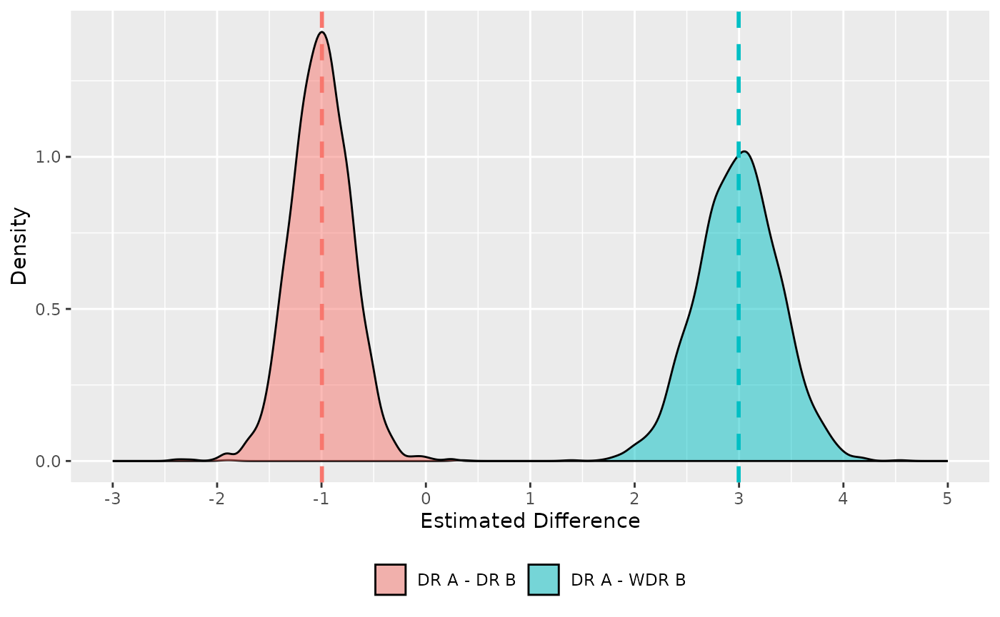

How to run TDID
Load the library
Upload data
data = tdid::example_dgp(1000)
head(data)
#> id time group W X Y
#> 1 1 1 A 1 2.0291407 1.34347905
#> 2 2 1 A 1 1.9147749 1.12206040
#> 3 3 1 A 0 0.9975437 0.59053958
#> 4 4 1 A 1 1.1360096 -0.01266106
#> 5 5 1 B 0 2.2049405 3.32070095
#> 6 6 1 B 0 3.3404646 2.46100783Estimate TDID with controls
tdid::drtdid(data)
#> tau tau.se dr_A dr_B wdr
#> 1 3.493839 0.5759991 5.212504 6.196596 1.718665Replicate the graph from the paper
Single iteration
single_it = function(n, seed) {
data = example_dgp(n = n, seed = seed)
mod = drtdid(data)
return(mod)
}Monte Carlo simulations
Plot results
res |>
dplyr::mutate(diff_dr = dr_A - dr_B) |>
ggplot() +
geom_density(aes(x = tau, fill = "DR A - WDR B"), alpha = .5) +
geom_density(aes(x = diff_dr, fill = "DR A - DR B"), alpha = .5) +
geom_vline(aes(xintercept = mean(res$dr_A - res$dr_B), color = "DR A - DR B"), linetype = "dashed", size = 1) +
geom_vline(aes(xintercept = mean(res$tau), color = "DR A - WDR B"), linetype = "dashed", size = 1) +
scale_x_continuous(breaks = -3:5, limits = c(-3, 5)) +
guides(color = "none") +
theme(legend.position = "bottom") +
labs(x = "Estimated Difference", y = "Density", fill = NULL)
#> Warning: Using `size` aesthetic for lines was deprecated in ggplot2 3.4.0.
#> ℹ Please use `linewidth` instead.
#> This warning is displayed once every 8 hours.
#> Call `lifecycle::last_lifecycle_warnings()` to see where this warning was
#> generated.
#> Warning: Removed 1 row containing non-finite outside the scale range
#> (`stat_density()`).
#> Warning: Removed 6 rows containing non-finite outside the scale range
#> (`stat_density()`).